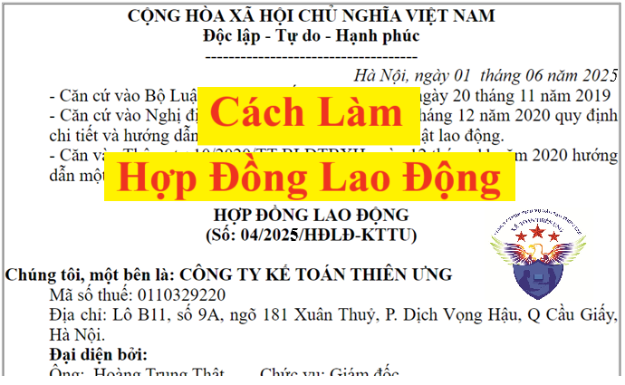

Hướng dẫn cách làm hợp đồng lao động không xác định thời hạn và có xác định thời gian cho nhân viên theo quy định của Bộ luật lao động và thông tư 10/2020/TT-BLĐTBXH
Để làm được hợp đồng lao động cho nhân viên thì trước tiên các bạn cần phải biết các thông tin sau:
1. Hợp đồng lao động là gì?
2. Khi nào thì phải ký hợp đồng lao động?
3. Có những loại hợp đồng lao động nào?
4. Trên hợp đồng lao động cần phải có những nội dung gì?
5. Có mẫu hợp đồng lao động nào để tham khảo không?

2. Khi nào thì phải ký hợp đồng lao động?
3. Có những loại hợp đồng lao động nào?
4. Trên hợp đồng lao động cần phải có những nội dung gì?
5. Có mẫu hợp đồng lao động nào để tham khảo không?
Dưới đây, Kế Toán Diệu Tâm xin được chia sẻ với các bạn lần lượt các thông tin trên:
1. Hợp đồng lao động là gì?
Theo quy định tại điều 13 của Bộ số 45/2019/QH14 thì:
Trường hợp hai bên thỏa thuận bằng tên gọi khác nhưng có nội dung thể hiện về việc làm có trả công, tiền lương và sự quản lý, điều hành, giám sát của một bên thì được coi là hợp đồng lao động.
2. Khi nào thì phải ký hợp đồng lao động? Cách giao kết HĐLĐ như thế nào?
3. Có những loại hợp đồng lao động nào?1. Hợp đồng lao động là gì?
Theo quy định tại điều 13 của Bộ số 45/2019/QH14 thì:
Hợp đồng lao động là sự thỏa thuận giữa người lao động và người sử dụng lao động về việc làm có trả công, tiền lương, điều kiện lao động, quyền và nghĩa vụ của mỗi bên trong quan hệ lao động.
Trường hợp hai bên thỏa thuận bằng tên gọi khác nhưng có nội dung thể hiện về việc làm có trả công, tiền lương và sự quản lý, điều hành, giám sát của một bên thì được coi là hợp đồng lao động.
2. Khi nào thì phải ký hợp đồng lao động? Cách giao kết HĐLĐ như thế nào?
Trước khi nhận người lao động vào làm việc thì người sử dụng lao động phải giao kết hợp đồng lao động với người lao động.
Hợp đồng lao động được giao kết thông qua phương tiện điện tử dưới hình thức thông điệp dữ liệu theo quy định của pháp luật về giao dịch điện tử có giá trị như hợp đồng lao động bằng văn bản.
Cách giao kết hợp đồng lao động: Hợp đồng lao động phải được giao kết bằng văn bản và được làm thành 02 bản, người lao động giữ 01 bản, người sử dụng lao động giữ 01 bản,
Hợp đồng lao động được giao kết thông qua phương tiện điện tử dưới hình thức thông điệp dữ liệu theo quy định của pháp luật về giao dịch điện tử có giá trị như hợp đồng lao động bằng văn bản.
Lưu ý: Hai bên có thể giao kết hợp đồng lao động bằng lời nói đối với hợp đồng có thời hạn dưới 01 tháng
Người lao động có thể giao kết nhiều hợp đồng lao động với nhiều người sử dụng lao động nhưng phải bảo đảm thực hiện đầy đủ các nội dung đã giao kết.
Theo quy định tại điều 20 của Bộ số 45/2019/QH14 thì: Hợp đồng lao động phải được giao kết theo một trong các loại sau đây:
+ Hợp đồng lao động không xác định thời hạn
(Đây là loại hợp đồng mà trong đó hai bên không xác định thời hạn, thời điểm chấm dứt hiệu lực của hợp đồng)
+ Hợp đồng lao động xác định thời hạn
(Đây là loại hợp đồng mà trong đó hai bên xác định thời hạn, thời điểm chấm dứt hiệu lực của hợp đồng trong thời gian không quá 36 tháng kể từ thời điểm có hiệu lực của hợp đồng)
4. Trên hợp đồng lao động cần phải có những nội dung gì?
b) Họ tên, ngày tháng năm sinh, giới tính, nơi cư trú, số thẻ Căn cước công dân, Chứng minh nhân dân hoặc hộ chiếu của người giao kết hợp đồng lao động bên phía người lao động;
c) Công việc và địa điểm làm việc;
d) Thời hạn của hợp đồng lao động;
đ) Mức lương theo công việc hoặc chức danh, hình thức trả lương, thời hạn trả lương, phụ cấp lương và các khoản bổ sung khác;
e) Chế độ nâng bậc, nâng lương;
g) Thời giờ làm việc, thời giờ nghỉ ngơi;
h) Trang bị bảo hộ lao động cho người lao động;
i) Bảo hiểm xã hội, bảo hiểm y tế và bảo hiểm thất nghiệp;
k) Đào tạo, bồi dưỡng, nâng cao trình độ, kỹ năng nghề.
Theo quy định tại khoản 1, điều 20 của Bộ Luật lao động số 45/2019/QH14 thì hợp đồng lao động phải có những nội dung chủ yếu sau đây:
a) Tên, địa chỉ của người sử dụng lao động và họ tên, chức danh của người giao kết hợp đồng lao động bên phía người sử dụng lao động;
b) Họ tên, ngày tháng năm sinh, giới tính, nơi cư trú, số thẻ Căn cước công dân, Chứng minh nhân dân hoặc hộ chiếu của người giao kết hợp đồng lao động bên phía người lao động;
c) Công việc và địa điểm làm việc;
d) Thời hạn của hợp đồng lao động;
đ) Mức lương theo công việc hoặc chức danh, hình thức trả lương, thời hạn trả lương, phụ cấp lương và các khoản bổ sung khác;
e) Chế độ nâng bậc, nâng lương;
g) Thời giờ làm việc, thời giờ nghỉ ngơi;
h) Trang bị bảo hộ lao động cho người lao động;
i) Bảo hiểm xã hội, bảo hiểm y tế và bảo hiểm thất nghiệp;
k) Đào tạo, bồi dưỡng, nâng cao trình độ, kỹ năng nghề.
Cách lập, ghi các nội dung này trên hợp đồng lao động đang được hướng dẫn chi tiết tại điều 3 của Thông tư 10/2020/TT-BLĐTBXH quy định chi tiết và hướng dẫn thi hành một số điều của Bộ luật Lao động về nội dung của hợp đồng lao động như sau:
1. Thông tin về tên, địa chỉ của người sử dụng lao động và họ tên, chức danh của người giao kết hợp đồng lao động bên phía người sử dụng lao động được quy định như sau:
+ Tên của người sử dụng lao động: đối với doanh nghiệp, cơ quan, tổ chức, hợp tác xã, liên hiệp hợp tác xã thì lấy theo tên của doanh nghiệp, cơ quan, tổ chức, hợp tác xã, liên hiệp hợp tác xã ghi trong giấy chứng nhận đăng ký doanh nghiệp, hợp tác xã, liên hiệp hợp tác xã hoặc giấy chứng nhận đăng ký đầu tư hoặc văn bản chấp thuận chủ trương đầu tư hoặc quyết định thành lập cơ quan, tổ chức; đối với tổ hợp tác thì lấy theo tên tổ hợp tác ghi trong hợp đồng hợp tác; đối với hộ gia đình, cá nhân thì lấy theo họ tên của người đại diện hộ gia đình, cá nhân ghi trong Căn cước công dân hoặc Chứng minh nhân dân hoặc hộ chiếu được cấp;
+ Địa chỉ của người sử dụng lao động: đối với doanh nghiệp, cơ quan, tổ chức, hợp tác xã, liên hiệp hợp tác xã thì lấy theo địa chỉ ghi trong giấy chứng nhận đăng ký doanh nghiệp, hợp tác xã, liên hiệp hợp tác xã hoặc giấy chứng nhận đăng ký đầu tư hoặc văn bản chấp thuận chủ trương đầu tư hoặc quyết định thành lập cơ quan, tổ chức; đối với tổ hợp tác thì lấy theo địa chỉ trong hợp đồng hợp tác; đối với hộ gia đình, cá nhân thì lấy theo địa chỉ nơi cư trú của hộ gia đình, cá nhân đó; số điện thoại, địa chỉ thư điện tử (nếu có);
+ Họ tên, chức danh của người giao kết hợp đồng lao động bên phía người sử dụng lao động: ghi theo họ tên, chức danh của người có thẩm quyền giao kết hợp đồng lao động theo quy định tại khoản 3 Điều 18 của Bộ luật Lao động.
2. Thông tin về họ tên, ngày tháng năm sinh, giới tính, nơi cư trú, số thẻ Căn cước công dân hoặc Chứng minh nhân dân hoặc hộ chiếu của người giao kết hợp đồng lao động bên phía người lao động và một số thông tin khác, gồm:
+ Họ tên, ngày tháng năm sinh, giới tính, địa chỉ nơi cư trú, số điện thoại, địa chỉ thư điện tử (nếu có), số thẻ Căn cước công dân hoặc Chứng minh nhân dân hoặc hộ chiếu do cơ quan có thẩm quyền cấp của người giao kết hợp đồng lao động bên phía người lao động theo quy định tại khoản 4 Điều 18 của Bộ luật Lao động;
+ Số giấy phép lao động hoặc văn bản xác nhận không thuộc diện cấp giấy phép lao động do cơ quan có thẩm quyền cấp đối với người lao động là người nước ngoài;
+ Họ tên, địa chỉ nơi cư trú, số thẻ Căn cước công dân hoặc Chứng minh nhân dân hoặc hộ chiếu, số điện thoại, địa chỉ thư điện tử (nếu có) của người đại diện theo pháp luật của người chưa đủ 15 tuổi.
3. Công việc và địa điểm làm việc được quy định như sau:
+ Công việc: những công việc mà người lao động phải thực hiện;
+ Địa điểm làm việc của người lao động: địa điểm, phạm vi người lao động làm công việc theo thỏa thuận; trường hợp người lao động làm việc có tính chất thường xuyên ở nhiều địa điểm khác nhau thì ghi đầy đủ các địa điểm đó.
4. Thời hạn của hợp đồng lao động: thời gian thực hiện hợp đồng lao động (số tháng hoặc số ngày), thời điểm bắt đầu và thời điểm kết thúc thực hiện hợp đồng lao động (đối với hợp đồng lao động xác định thời hạn); thời điểm bắt đầu thực hiện hợp đồng lao động (đối với hợp đồng lao động không xác định thời hạn).
5. Mức lương theo công việc hoặc chức danh, hình thức trả lương, kỳ hạn trả lương, phụ cấp lương và các khoản bổ sung khác được quy định như sau:
+ Mức lương theo công việc hoặc chức danh: ghi mức lương tính theo thời gian của công việc hoặc chức danh theo thang lương, bảng lương do người sử dụng lao động xây dựng theo quy định tại Điều 93 của Bộ luật Lao động; đối với người lao động hưởng lương theo sản phẩm hoặc lương khoán thì ghi mức lương tính theo thời gian để xác định đơn giá sản phẩm hoặc lương khoán;
+ Phụ cấp lương theo thỏa thuận của hai bên như sau:
+/ Các khoản phụ cấp lương để bù đắp yếu tố về điều kiện lao động, tính chất phức tạp công việc, điều kiện sinh hoạt, mức độ thu hút lao động mà mức lương thỏa thuận trong hợp đồng lao động chưa được tính đến hoặc tính chưa đầy đủ;
+/ Các khoản phụ cấp lương gắn với quá trình làm việc và kết quả thực hiện công việc của người lao động.
+ Các khoản bổ sung khác theo thỏa thuận của hai bên như sau:
+/ Các khoản bổ sung xác định được mức tiền cụ thể cùng với mức lương thỏa thuận trong hợp đồng lao động và trả thường xuyên trong mỗi kỳ trả lương;
+/ Các khoản bổ sung không xác định được mức tiền cụ thể cùng với mức lương thỏa thuận trong hợp đồng lao động, trả thường xuyên hoặc không thường xuyên trong mỗi kỳ trả lương gắn với quá trình làm việc, kết quả thực hiện công việc của người lao động.
Đối với các chế độ và phúc lợi khác như thưởng theo quy định tại Điều 104 của Bộ luật Lao động, tiền thưởng sáng kiến; tiền ăn giữa ca; các khoản hỗ trợ xăng xe, điện thoại, đi lại, tiền nhà ở, tiền giữ trẻ, nuôi con nhỏ; hỗ trợ khi người lao động có thân nhân bị chết, người lao động có người thân kết hôn, sinh nhật của người lao động, trợ cấp cho người lao động gặp hoàn cảnh khó khăn khi bị tai nạn lao động, bệnh nghề nghiệp và các khoản hỗ trợ, trợ cấp khác thì ghi thành mục riêng trong hợp đồng lao động.
+ Hình thức trả lương do hai bên xác định theo quy định tại Điều 96 của Bộ luật Lao động;
+ Kỳ hạn trả lương do hai bên xác định theo quy định tại Điều 97 của Bộ luật Lao động.
6. Chế độ nâng bậc, nâng lương: theo thỏa thuận của hai bên về điều kiện, thời gian, mức lương sau khi nâng bậc, nâng lương hoặc thực hiện theo thỏa ước lao động tập thể, quy định của người sử dụng lao động.
7. Thời giờ làm việc, thời giờ nghỉ ngơi: theo thỏa thuận của hai bên hoặc thỏa thuận thực hiện theo nội quy lao động, quy định của người sử dụng lao động, thỏa ước lao động tập thể và quy định của pháp luật.
8. Trang bị bảo hộ lao động cho người lao động: những loại phương tiện bảo vệ cá nhân trong lao động theo thỏa thuận của hai bên hoặc theo thỏa ước lao động tập thể hoặc theo quy định của người sử dụng lao động và quy định của pháp luật về an toàn, vệ sinh lao động.
9. Bảo hiểm xã hội, bảo hiểm y tế và bảo hiểm thất nghiệp: theo quy định của pháp luật về lao động, bảo hiểm xã hội, bảo hiểm y tế và bảo hiểm thất nghiệp.
10. Đào tạo, bồi dưỡng, nâng cao trình độ, kỹ năng nghề: quyền, nghĩa vụ và lợi ích của người sử dụng lao động và người lao động trong việc bảo đảm thời gian, kinh phí đào tạo, bồi dưỡng, nâng cao trình độ, kỹ năng nghề.
5. Có mẫu hợp đồng lao động nào để tham khảo không?
Trong Bộ Luật lao động số 45/2019/QH14 hay trong Nghị định 145/2020/NĐ-CP quy định chi tiết và hướng dẫn thi hành một số điều của Bộ luật lao động về điều kiện lao động và quan hệ lao động và thông tư 10/2020/TT-BLĐTBXH quy định chi tiết và hướng dẫn thi hành một số điều của Bộ luật Lao động về nội dung của hợp đồng lao động đều không ban hành mẫu hợp đồng lao động
=> Do đó doanh nghiệp phải tự xây dựng hợp đồng lao động căn cứ vào các hướng dẫn nêu trên
Và bạn có thể tham khảo các mẫu hợp đồng lao động của Kế Toán Diệu Tâm tại đây: